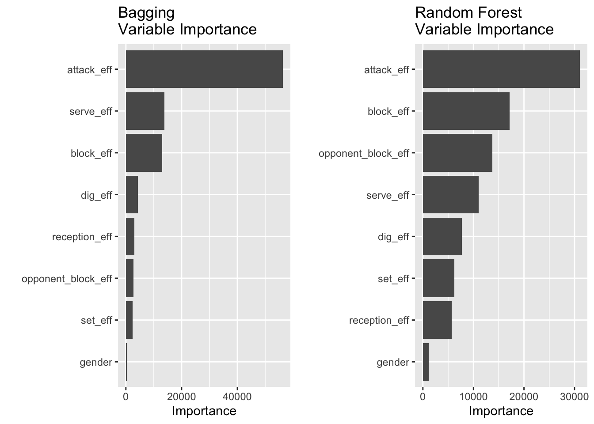
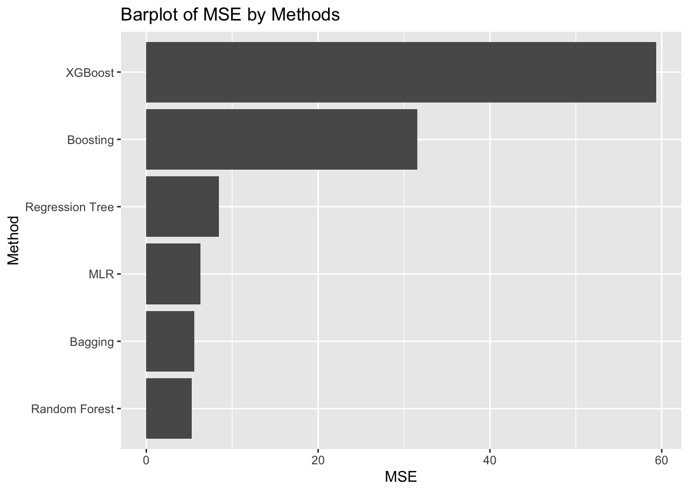

Volleyball as a Team Sport
1. Introduction
Volleyball is among the most popular team sports around the world. The players and audience enjoy it because of the strength, sportsmanship, and team collaboration demonstrated in the game. However, one may wonder that, to what extent is volleyball a team sport? In other words, which between a player’s capability and team cooperation contributes more to winning a game?
This question further breaks down to the following subquestions to be discussed in this report:
1. How much does the score a player wins in a game depend on her personal capacity, such as physical traits and experience?
2. Is there a particular position or “ace” in the team critical for winning the game?
3. Is there an association between the performances of two team members at specific positions in a game?
In this project, I analyzed data from the FIVB Volleyball Nations League (VNL) to better understand the mechanisms of volleyball. To learn the characteristics of as many teams as possible, I decided to focus on the preliminary round, where each of the 16 teams played against every other team once in the round-robin stage.
Terminology
Before diving into the methods, some volleyball terms relevant to the analysis are listed as follows. [Reference]
- Match: Volleyball matches are a made up of sets. Match play on VNL consists of competing until one team wins 3 out of 5 sets.
- Set (game): A volleyball set is played to 25 points. Sets must be won by at least 2 points.
- Dig: Passing a rapidly hit ball from the rally (potentially to the setter).
- Set: The tactical skill in which a ball is directed to a point where an attacker can spike it into the opponent’s court.
- Spike: The offensive action of hitting the ball. The attempt by one team to terminate the play by hitting the ball to the floor on the opponent’s side. Also “attack”.
Positions: - Middle Blocker: Middle blockers hit balls set at the net in the middle of the court. Middle blockers are commonly used as a decoy to freeze or confuse the opposing teams blockers.
- Outside Hitter: Outside hitters are usually the primary attackers on the team. These hitters attack balls that are set to the left side of the court.
- Setter: Setters have the 2nd of 3 contacts of the ball and “set” the ball with an “Overhand Pass” for a attacker to hit.
- Libero: liberos serves as defensive specialists on the team who usually “dig” with the 1st of 3 contacts of the ball.
- Opposite Spiker: Opposite hitters, also know as right-side hitters, are considered the most versatile because they can excel on offense and defense.
2. Methods
2.1 Data Source
The data primarily from the 2019 Women’s VNL. The player roster dataset contains the basic information of the 400 players from the 16 teams, such as the age, height, and position they play in the team. The team rank dataset contains the rank of the teams in terms of how many matches they won. In addition, the best player datasets contain the summary of the player’s spike, block, set, and dig skills, respectively.
To expand the analysis based on the preliminary results from the midterm, I included a new dataset that contains detailed match statistics by player for each single match. The biggest limitation of my midterm analysis came from the lack of per-set data. As suggested from the midterm feedback, the addition of the new dataset allows me to run regression with a larger sample size without collapsing by the team and get more reliable results. The data is from the 2021 FIVB Volleyball Nations League since the 2019 website does not release detailed match information.
The data was retrieved by web scraping at the 2019 and 2021 websites. The Python library Beautiful Soup and lxml was used to pull the data from web pages. The Python script and generated datasets can be viewed on this GitHub repository.
2.2 Tools for Exploration
I read the datasets into data tables. Data cleaning and wrangling operations were completed using primarily data.table methods. Most figures presented in this report were created using ggplot2, while the interactive visualizations were created using plotly. The GGally library was used to generate the pairwise correlation plots. The tables were formatted using kableExtra.
2.3 Data Cleaning
After the datasets are ready, I started exploratory data analysis. The team rank data table has 16 rows and 19 columns, which is expected as there were 16 teams in the tournament. The player bio data table contains 400 rows for 400 players and 13 columns, while the best scorer data table contains 245 rows. This is because many substitute players did not get a chance to play or score and were not included in the ranking.
A further look into the variables revealed some issues with the original data table. For the bio data table, three outliers of spike height lower than 240cm were observed from the simple boxplot. It turned out two of them were from liberos with height 162, which is reasonable because libero is the position that has the least requirement on athlete height. However, the third outlier with a value of 130cm comes from a middle blocker of height 192cm, which is likely a mistake. Thus, I replaced the 130cm by 292cm, which is the block height from the same player. When I looked at the position variable from the bio data table, I saw that only one player had a position named “Universal” which is not among the positions introduced in the previous terminology. The player was from Team Dominican Republic and had a total score of 93. I then substituted her position by the mode position, outside hitter. In addition, the cases of player position names were not consistent. I standardized them to capital cases.
2.4 Data Wrangling
I noticed that some names on the bio data table had a letter “c” preceded by a newline at the end of the string. As I confirmed on the website, the “c” indicates that the player was the captain of the team. There were 16 such names as the competition had 16 team participants. I created a new indicator variable is_captain with value 0 and 1 before removing the suffix from the name string.
age was created as a new numerical variable. I extracted the year from the birthdate variable, converted it into an integer value, and subtracted it from year 2019 to calculate a player’s age at the time of the competition.
Before merging the data tables together, I renamed the ambiguous columns with specific names. For example, variables called total were both present in the best scorer and bio datasets, but they represent total scorer and the number of times a player had been selected for competitions, respectively.
Next, I took the variable total score from the best scorers dataset, attack success rate from the best spikers dataset, digs per set from the best diggers dataset, sets per set from the best setters dataset, and attack success rate from the best attackers dataset. I merged the bio and with those variables of interest using the player name. I then checked the combined data table still has 400 rows - Luckily, there were not two players with the same name.
However, 112 rows have NA values in all columns total score, digs per set, sets per set, and attack success rate. Missing values were expected as previously we saw bio and best scorers have different row numbers. I first dropped the 112 rows and then imputed the remaining missing values with averages within the group position because players from the same position are more likely to have similar scores. The result player data table has 288 rows.
Then, to prepare for the later investigation of the association between player performance and team result, I merged the newly generated player data table with the team rank data table. No missing values were introduced to the combined table this time.
For the player match statistics, I grouped the data by the match ID and the team name and calculated the average efficiency for tactical skills attack, block, and serve by dividing the total points gained minus the errors from the skill by the total number of attempts. For skills set, reception, and dig, I used the maximum efficiency record of the corresponding best player within a team. As a result, the processed data table has rows that each represents one team’s performance in terms of tactical skill efficiencies in addition to the overall point difference during one match. Then, I merged the data table with itself to include relevant opponent team information for later model fitting.
3. Results
3.1 How much does the score a player wins in a game depend on her personal capacity, such as physical traits and experience?
Starting with the first question of interest, I focused on the variable total score as the measurement of performance, variables height and spike height for physical traits, and variables age and total selection (the number of times the player had been selected to compete in championships) as the measurement of experience. The total score is the sum of attack score, block score, and serve score. The correlation between spike height and block height is as large as 0.89. I also found that the spike height is no smaller than the block height for all players, so I picked spike height as an indicator for jump height.
I created two sets of pairwise correlation plots of total score with physical measurements and experience measurements, respectively.


We can observe on the plot that there is a large correlation between spike height and height of value 0.735. The correlation between total score and spike height is significant as indicated by the three asterisks, and the correlation coefficient is 0.403. In terms of experience, the number of selections is significantly associated with age. The total score the player won during the competition is positively correlated with the number of selections. The correlation has a coefficient value of 0.171, which is relatively weak compared to that with spike height. However, the performance of a player is not associated with age as the correlation value 0.003 is very close to zero.
Then, I fitted a linear model to total score and spike height. The estimated coefficient of spike height is 1.65, which represents that an increment of 1cm in spike height will result in an increase of 1.65 points in a player’s score. The p-value is \(1.10\times 10^{-12}\), smaller than the significance level \(\alpha=0.05\), so the estimate is statistically significant. The adjusted \(R^2\) of the multiple linear regression model is 0.16, so about 16% of the variation in total score can be explained by the independent variables spike height.
Despite the significance, I identified some problems from the diagnostic plots. The line on the residual vs fitted graph is a little curved rather than horizontally straight. Some points on the tails from the Normal QQ plot fall off the line. Thus, the residuals are not normally distributed. The linear model might not be an ideal choice for total score and spike height.
However, the score a player wins in a match depends on the nature of her position, and each position has different physical standard for the player. For example, opposite spikers and outside hitters are the primary attackers on the team and score most of the points. Those positions have high requirement on the player height as they need to hit the ball high to pass the block from the rally. On the other hand, liberos serve as defensive specialists and usually do not have an opportunity to score directly. They need to be agile to dig the ball before it hits the floor and thus have a lower weight among the players. Similarly, setters usually have the 2nd of three contacts with the ball and pass the ball to attackers on the team. It is unusual setters score directly on the court except serves.
| position | Average Score | Average Height | Average Weight | Number |
|---|---|---|---|---|
| Opposite Spiker | 101 | 189 | 75 | 36 |
| Outside Hitter | 84 | 185 | 71 | 92 |
| Middle Blocker | 56 | 189 | 74 | 74 |
| Libero | 21 | 170 | 62 | 38 |
| Setter | 15 | 180 | 68 | 48 |

The boxplot shows that there is a large variation in opposite spikers’ scores. The attackers in general score much more points directly than setters and liberos on the team.
The scatter plot below shows how players’ total scores change with their spike heights, where the color of the bubble indicates the player’s position and the size indicates the number of total selections. A specific team can be selected from the dropdown menu.
There is not a dominant pattern across different teams. However, generally a player with a high score is more likely to have a high spike height. The score a player can win for her team largely depends on the nature of the position she plays. Spikers are the primary scorers on a team and spike heights affect spikers’ potential of winning points the most among all positions. However, a player’s performance is not necessarily related to her experience. Young players who have not participated in a lot of world championships can gain as many points as experienced players.
Therefore, There is a moderate association between the points a player wins on a competition and her physical traits, especially with the jump height. Attackers on the team are likely to score points on a match. The association is stronger among some volleyball positions and weaker among others. However, a player’s performance is not necessarily related to her experience. Young players who have not participated in a lot of world championships can gain as many points as experienced players.
3.2 Is there a particular position or “ace” in the team critical for winning the game?
To answer this question, I studied the association between the teams’ results and players’ performance. The team result was evaluated using the metric point difference, match points, and set ratio. Point difference is the difference in the points two teams win in a match, which could be negative or positive depending on the target of analysis. A larger point difference indicates a better performance as the team outperforms the opponent team more. However, it needs to be noted that the point difference depends on both team’s performances and is thus not an accurate measure of the target team’s ability.
Match points were calculated by adding up points gained from each match according the following criteria.
| Match won 3-0; 3-1 | 3 points |
| Match won 3-2 | 2 points |
| Match lost 2-3 | 1 points |
| Match lost 0-3; 1-3 | 0 points |
| Match forfeited | 0 points |
The philosophy behind is that teams aim to finish a match by winning three out of five sets as soon as possible ideally without losing a set. If two or more teams are tied on the number of points gained, they will be ranked by set ratio resulting from the division of the number of all set won by the number of all sets lost. Players’ performance was measured based on their total score, success rate of attacks, the number of digs per set, and the number of sets per set. Actions of digs and sets are usually the first two contacts with the ball and do not count towards scores, but they also reflect player skills, especially for liberos and setters.
3.2.1 Team Summary Statistics
First, I took a closer look at each of the 16 teams. Below is a heatmap of the 16 teams’ performance throughout the preliminary round in 2021 VNL. The teams are ordered on the x-axis according to their final rank and the y-axis is the match number they played in round robin. The result is measured in terms of the point difference between two teams on a match. Thus, the lighter the cell color is, the more the team has outperfomed the opponent.
It is noticeable that the teams on the left with higher ranks have lighter-shaded blocks while teams on the right have darker-shaded blocks.
Summary statistics of match results, player performance, and play bio in 2019 are displayed in the table below. Maximum and average total scores of players are calculated for each team together with the standard deviation. For digs and sets, because one of the 6 players on the court in a game will be a setter and at most one of them will be a libero, I only took maximum values on the number of digs and sets per set for each team.
| Rank | Team | Match Win | Match Points | Set Ratio | Max Score | Average Score | STD Score | Max Digs | Max Sets | Average Age | Average Selections | Average Height |
|---|---|---|---|---|---|---|---|---|---|---|---|---|
| 1 | China | 12 | 35 | 3.083 | 157 | 54 | 44.39 | 1.68 | 2.20 | 24 | 42 | 187 |
| 2 | USA | 12 | 35 | 2.294 | 235 | 66 | 57.15 | 2.05 | 2.67 | 25 | 78 | 188 |
| 3 | Brazil | 11 | 35 | 2.500 | 278 | 72 | 78.86 | 2.60 | 4.90 | 26 | 4 | 183 |
| 4 | Italy | 11 | 34 | 1.857 | 223 | 73 | 69.14 | 2.46 | 4.22 | 24 | 121 | 184 |
| 5 | Turkey | 11 | 32 | 2.000 | 291 | 79 | 78.44 | 2.47 | 5.16 | 24 | 51 | 186 |
| 6 | Poland | 9 | 26 | 1.137 | 421 | 73 | 105.42 | 2.07 | 2.07 | 24 | 52 | 184 |
| 7 | Belgium | 8 | 22 | 0.965 | 231 | 60 | 73.61 | 2.68 | 5.04 | 22 | 61 | 183 |
| 8 | Dominican Republic | 8 | 21 | 0.939 | 258 | 86 | 79.69 | 2.72 | 4.72 | 26 | 95 | 187 |
| 9 | Japan | 7 | 22 | 1.000 | 193 | 55 | 49.86 | 3.20 | 5.83 | 26 | 99 | 176 |
| 10 | Germany | 7 | 21 | 0.827 | 231 | 52 | 57.19 | 3.51 | 3.62 | 24 | 52 | 183 |
| 11 | Netherlands | 6 | 20 | 0.900 | 125 | 44 | 33.41 | 1.63 | 4.47 | 24 | 143 | 187 |
| 12 | Thailand | 5 | 16 | 0.515 | 143 | 49 | 51.60 | 2.50 | 6.68 | 29 | 24 | 175 |
| 13 | Serbia | 5 | 15 | 0.606 | 146 | 41 | 41.06 | 1.98 | 2.17 | 24 | 63 | 184 |
| 14 | Russia | 3 | 10 | 0.421 | 155 | 43 | 48.25 | 1.98 | 4.04 | 24 | 14 | 186 |
| 15 | Korea | 3 | 9 | 0.432 | 185 | 54 | 57.73 | 2.23 | 4.34 | 27 | 86 | 181 |
| 16 | Bulgaria | 2 | 7 | 0.317 | 197 | 63 | 66.03 | 3.48 | 3.89 | 24 | 1 | 184 |
In terms of player profile, Team Belgium was the youngest team with an average age of 22 while the largest average age was 29 from Team Thailand. At the same time, Thailand players were the shortest with an average height of 175cm. The largest average height of 188cm came from Team USA. While Team China and Team USA both won 12 matches, the former had a larger set ratio, which means Team China had lost fewer sets during the matches. However, neither Team China nor USA had a particularly large max or average player score. Team China’s max player score was among the last five teams and they had the third smallest standard deviation of player scores. On the other hand, the best scorer of the season, Malwina Smarzek, won 421 points on her own for Team Poland, but the team ranked in 6th place, which was not as good as one may expect Therefore, the score an ace wins for the team is not deterministic.
The spread of players’ scores for each team is shown in the following boxplots. The teams are ordered according to the round robin rank from left to right.
We can observe that many teams have one or two players who are the primary scorer on the team. However, Having players at similar levels does not necessarily put a team at a disadvantage. Though it is certainly better for the players to be similarly strong rather than similarly weak.
3.2.2 Models of Point Difference with Tactical Skill Efficiencies
Next, I used both multiple linear regression and machine learning methods learned on the lecture to fit models for predicting point differences based on skill efficiencies. To later performed boosting, I first converted character variables, gender into a numeric variable and filtered out missing values. Then, I split the data into training and testing sets (70%,30%) using sampled indices.
3.2.2.1 Multiple Linear Regression
I tried to fit linear models to the matches’ point difference based on different combinations of explanatory variables of attack, block, serve, set, reception, dig efficiencies and the opponent team’s block efficiency. The resulted coefficients of determination (adjusted), residual variance, model p-values, and AICc are shown in the following table. The attack, block, serve efficiencies compose the base group.
| Explanatory Variables | Coefficient of Determination | Residual Variance | Model p-value | AICc |
|---|---|---|---|---|
| Base + Set, Reception, Dig Efficiency + Opponent Block Efficiency | 0.745 | 68.199 | 0 | 3512.219 |
| Base + Dig Efficiency + Opponent Block Efficiency | 0.740 | 69.733 | 0 | 3521.135 |
| Base + Dig Efficiency | 0.727 | 73.240 | 0 | 3544.431 |
| Base (Attack, Block, Serve Efficiency) | 0.711 | 77.398 | 0 | 3570.777 |
We can notice that while all four models are significant with p-values smaller than the 0.05 significance level, the linear model that includes all explanatory variables has the largest adjusted \(R^2\), which indicates that around 74.5% of the variation in the point differences can be explained by the skill efficiencies. That model also has the smallest residual variance among the four and is favoured by the AICc model selection. Specifically, the parameters in the full model are all significant. Thus, the team’s performance is relevant with various skill efficiencies.
The graph below shows the visualization of the linear regression of point difference with the average player attack efficiency. The linear trend is obvious on the plot for both women and men’s games. The team’s performance is better with higher attack efficiency.

3.2.2.2 Regression Tree
I fitted a regression tree using the ANOVA method since the point difference has continuous values. The complexity parameter was initially set to 0, and I pruned the tree using the complexity parameter which yields the minimum xerror. The pruned tree was visualized below.

3.2.2.3 Bagging & Random Forest
I next used bagging and random forests to predict point_diff. The parameter mtry in the randomForest function was set to 8 for bagging, which equals the number of features in the matchs dataset,and kept as default for random forests. Other parameters were kept as default. The variable importance plots shown below were generated using varImpPlot. It is noticeable from the plot that the variables with the highest three importance values are attack, block, and serve efficiencies from bagging, but attack, block, and opponent’s block efficiencies from random forests.

3.2.2.4 Boosting & XGBoost
I performed boosting with 1000 trees and experimented with a range of shrinkage parameter values \(\lambda\) 0.1, 0.01, and 0.001. For each shrinkage parameter, I recorded the test set MSE and found that shrinkage parameter 0.01 yields the smallest test error. I then used the model with 0.001 shrinkage parameter for constructing the variable importance plot. I also fitted a model using XGBoost. The variable importance plots, which have different importance scales, from the two methods are shown below. Similar with bagging, models from these two methods both have variables attack, block, and serve efficiencies with the largest importance values.

3.2.2.5 Model Evaluation
To compare the models generated from different methods, I computed the MSE values on test sets for each model. The results are summarized in the barplot below.

The model performances are not consistent through different runs. However, the insights from these models are rather similar, players’ attack, block, and serve efficiencies have the largest impact on a match’s result as these variables have the highest importance values.
3.2.3 Team’s Composition of Top Ranked Players
Then, I explored how many best players each team had, according to the spike, block, set, and dig rankings. while the spiker ranking was determined by a player’s attack success rate, the rankings for block, set, and dig were evaluated based on the average number of tactical skills successfully performed by a player in a set.
The scatterplot below decomposes the top 10 rankings for the 4 skills, where the color of the marker indicates the tactical skill while the shape indicates the player position. The 16 teams on the y-axis are ordered by the preliminary round team rank from top to bottom. The x-axis corresponds to the rank from 1 to 10, so each vertical line would have four pins for the four skills. The player name is shown on the popup text when hovering over the marker.

There is no surprise that the top 10 players who excel at setting were setters, and opposite spikers and outside hitters were the best at attacks. It is interesting to note that the 10 best diggers could be liberos, outside hitters, and even setters. A potential explanation is that a libero is not always on the court during a match. Although players need to actively attack to score, preventing the ball from hitting the floor at the first place is equally important. Thus, it never hurts to have more people good at digging on the team.
If we ignore the skill category, dividing the 40 top players by 16 teams gives us an average of 2.5 top players scattered in each team, as indicated by the horizontal dashed line on the barchart. To my surprise, both Team China and Team USA only had one top 10 attacker on the team, who ranked in the 8th and the 1st, respectively. The other three top-5 teams have players who excel at each of the four tactical skills. Thus, it is difficult to conclude if it’s more advantageous for a team to be well-rounded and have good players with all tactical skills, or having an ace player excellent at a particular skill is good enough. However, it is noticeable that while good setters, diggers, and blockers almost evenly scattered across all teams, the first half of teams had most of the good attackers. Team Turkey even had two good attackers who ranked in the 3rd and 7th in addition to a third best setter. Therefore, a team at least needs an attacker to actively spike and score.
I then look into details about the top 1 players for the four skills. Team USA had the best attacker Andrea Drews with an attack success rate of 48.1%. Drews’ height and spike height surpassed 85% other attackers on the competition. In the final game after the preliminary round, Team USA won the gold medal and Drews was selected the MVP. Drews later became a gold medalist at the 2021 Tokyo Olympic Games. The previously mentioned best scorer Malwina Smarzek only ranked as the 6th best spiker with a slightly lower success rate of 43.6%. Although Smarzek scored more by spikes for Team Poland, she made 863 attempts, which was more than twice as Drews.
The top player for other three skills all came from teams in the second half. The best blocker Maja Aleksic was from Team Serbia but she was the only top 10 player on the team for all skills, and that was not enough to lead the team to victory. It is worth mentioning that the best setter, Nootsara Tomkom from Team Thailand, was also ranked at the 8th place for her digging skill with 6.7 digs per set. The libero on the team was only ranked at the 35th place with 1.7 digs per set. We know that the dig and set are usually the first and second of three contacts with the ball. One can imagine that the setter will not be able to set the ball for attackers to hit if she digs the ball first because a player is not allowed to touch the ball for two consecutive times. This might be a critical issue for Team Thailand. Without a reliable libero to pick up the ball at the first place, a team may not benefit from the setter’s excellent setting skill.
3.2.4 Team Captains
I analyzed the characteristics of the 16 captains from different teams to see how they decide this important role of leading the team to victory. The position of captain is given to athletes whom the rest of the team respect and trust. A captain is often one of the older or more experienced players and have good leadership qualities. But sometimes, the player best with some tactical skills is selected as the captain.
On 2019 VNL, the average age among the captains was 29, which was 5 years older than the overall mean age of 24. In addition, they had been selected to participate in competitions for an average of 148 times before 2019 VNL, which was almost three times the mean value for all players. This verifies the above statement that captains are usually experienced players.
Next, I considered the positions of the captains. The pie chart below shows that almost half of the captains were outside hitters. Together with middle blockers and opposite spikers, attackers amounted to 75% of the captains. However, this figure is similar to the proportion of attackers among all players, which is 69%. No captain served as a libero on the team, while a quarter of the captains were setters on their teams. This proportion is a half larger than the percentage of setters among all players. A possible reason is that at the position receiving the second touch of the ball, setters interact largely with both defensive and offensive roles. Setter is often so-called brain of the team, who directs the team’s offense. Thus, it can be nature for the setter to take the role of team captain.

From the histogram of captains’ scores, most of the captains contribute 50 to 100 points to the team through the preliminary round. The table below compares the primary scorer with the captain of each team. Since all primary scorers are spikers, I included their attack success rate and attacker ranks. For each captain, I found the skills they are relatively the best at and included their rankings for that skill.
| Attacker Rank | Attack Success Rate | Position | Total Score | Name | Team | Name | Total Score | Position | Best Skill | Skill Rank |
|---|---|---|---|---|---|---|---|---|---|---|
| 8 | 43.24 | Opposite Spiker | 157 | Xiangyu Gong | China | Xiaotong Liu | 68 | Outside Hitter | Attack | 77 |
| 1 | 48.12 | Opposite Spiker | 235 | Andrea Drews | USA | Jordan Larson | 70 | Outside Hitter | Dig | 99 |
| 5 | 43.9 | Outside Hitter | 278 | Gabriela Braga Guimaraes | Brazil | Natalia Pereira | 103 | Outside Hitter | Attack | 52 |
| 4 | 45.75 | Outside Hitter | 223 | Elena Pietrini | Italy | Cristina Chirichella | 70 | Middle Blocker | Block | 29 |
| 3 | 45.91 | Outside Hitter | 291 | Ebrar Karakurt | Turkey | Meryem Boz | 76 | Opposite Spiker | Block | 95 |
| 6 | 43.57 | Opposite Spiker | 421 | Malwina Smarzek | Poland | Agnieszka Kakolewska | 131 | Middle Blocker | Block | 3 |
| 13 | 40.67 | Outside Hitter | 231 | Britt Herbots | Belgium | Ilka Van De Vyver | 30 | Setter | Set | 4 |
| 2 | 47.57 | Outside Hitter | 258 | Brayelin Elizabeth Martinez | Dominican Republic | Prisilla Rivera Brens | 89 | Outside Hitter | Block | 61 |
| 26 | 34.04 | Outside Hitter | 193 | Yuki Ishii | Japan | Nana Iwasaka | 50 | Middle Blocker | Block | 55 |
| 12 | 41.33 | Opposite Spiker | 231 | Louisa Lippmann | Germany | Denise Hanke | 29 | Setter | Set | 12 |
| 145 |
|
Middle Blocker | 125 | Juliet Lohuis | Netherlands | Maret Grothues | 49 | Outside Hitter | Dig | 94 |
| 27 | 33.7 | Outside Hitter | 143 | Ajcharaporn Kongyot | Thailand | Nootsara Tomkom | 20 | Setter | Set | 1 |
| 22 | 36.58 | Outside Hitter | 146 | Katarina Lazovic | Serbia | Maja Aleksic | 108 | Middle Blocker | Block | 1 |
| 23 | 36.39 | Outside Hitter | 155 | Tatiana Ezhak | Russia | Evgeniya Startseva | 2 | Setter | Set | 97 |
| 33 | 32.07 | Opposite Spiker | 185 | Heejin Kim | Korea | Yeon Koung Kim | 144 | Outside Hitter | Attack | 9 |
| 30 | 32.83 | Outside Hitter | 197 | Gergana Dimitrova | Bulgaria | Gergana Dimitrova | 197 | Outside Hitter | Dig | 16 |
We can observe that the captains were not the primary scorers on the team no matter what position they played, except from Team Bulgaria which ranked the last place in the preliminary round. Only the 9th best attacker, Yeon Koung Kim was Team Korea’s captain. The rest of top-10 attackers do not serve as the team captain. On the contrary, most captains were most skilled in blocking, setting, and digging. Some of them are among the best setters and blockers. Team Thailand’s captain Tomkom was the best setter (also recall that she’s the 8th best digger), while the best blocker Aleksic served as the captain of Team Serbia. Aleksic was only 22 years old in 2019, which would definitely considered young as a captain. This can be an example demonstrating that captains do not necessarily need to be old if they are skilled enough to earn trust from other teammates.
3.3 Is there an association between the performances of two team members at specific positions in a game?
A basic rule of volleyball is that each team is allowed a maximum of three successive contacts of the ball in order to return it to the opponent’s area. A typical routine is (1) the libero receives the ball and passes it to the setter; (2) the setter sets the ball for one spiker on the team; (3) the spiker hits the ball to the rally’s area. For this last question, I wanted to explore the interactions between (1) and (2), as well as between (2) and (3).
I attempted to fit a simple linear model to the set efficiency with the dig and reception efficiencies during a game. Another linear model was created for the attack efficiency and the set and opponent block efficiencies. The adjust \(R^2\) and p-values are summarized in the table below, and I visualized the linear regression in the scatter plots.
| Interaction | Coefficient of Determination | P-value |
|---|---|---|
| Sets ~ Digs + Reception | 0.0086785 | 0.440349 |
| Spikes ~ Sets + Opponent Block | 0.2971835 | 0.000000 |

We can see that the first model between set and dig efficiencies is not statistically significant as the p-values are greater than 0.05. Also, the points on the scatter plot are rather random and no obvious pattern can be observed. As for the model between spike and attack efficiency, it has a 0.297 coefficient of determination such that around 30% of the variation in the spike efficiency can be explained by the set and opponent block efficiencies. From the scatter plot, there is a moderate linear trend even though many points lie outside of the shaded confidence interval. We know from previous analysis in section 3.1 that a spiker’s physical traits such as heights and spike heights can also affect their scores and attack efficiency. However, it still holds that there is association between a spiker and a setter’s performances in a game.
4. Conclusion
In this analysis, I explored the three formulated questions. The score a player can win for her team largely depends on the nature of the position she plays. Spikers are the primary scorers on a team and spike heights affect spikers’ potential of winning points the most among all positions. Age and experience, on the other hand, are not critical factors for player scores.
In terms of team performance, the score the ace wins for the team is not deterministic. Not having an absolute primary scorer does not always put a team at a disadvantage. Instead, the the team performance, which is evaluated in terms of point difference, is more associated with the average player attack, block, and serve efficiencies, while the set, reception, and dig efficiencies are relevant as well. There is no such thing as too many good receivers on the team. A team also does not need to be all-rounded with excellent blocker, setter, and digger at the same time. However, a reliable spiker is a must-have for a team to actively attack and score. Captain is potentially the most important role on the team but is often not the player who directly contributes most scores. They are usually experienced or skilled such that other teammates trust them in terms of leading the team to victory. In some teams, setters who serve like a bridge between players fit naturally to the role of captain. In addition, there is certain association between the performances of two team members at specific positions. For example, a setter’s set efficiency impacts the spikers’ scoring.
Although it is undeniable players’ individual capability is important for the game, team collaboration is the essence of volleyball. Depending on player skills and characteristics, different teams can arrange different strategies focusing on offense or defense. All players at all positions contribute to the game together and none of the positions is absolutely superior to another.
Download the PDF report here
Copyright © 2022, Zhengdan Li.